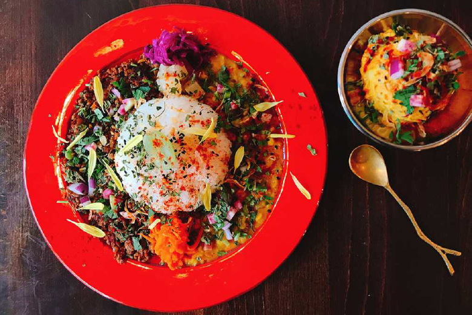
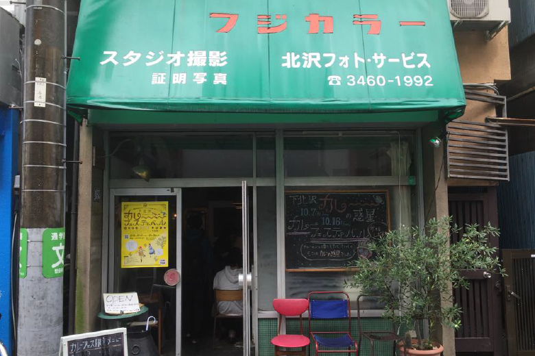
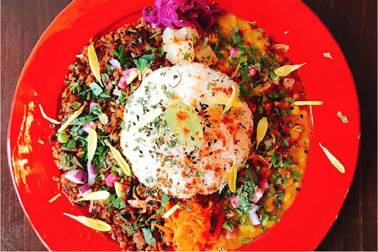
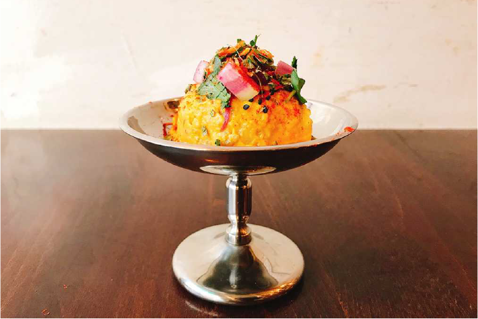

カレーの惑星

場所は下北沢駅から徒歩7分。「カレーの惑星」のカレーは、スパイスをふんだんに使った奥深い味わいと、カレーの概念を覆す色とりどりの野菜や花が散りばめらたフォトジェニックな見た目で話題の大人気のカレー店です。

「カレーの惑星」があるのは、下北沢一番街商店街の一角。こちらの「フジカラー」の看板が目印です。かつてこの場所にあったカメラ屋さんの看板をそのまま残しているのだそう。カメラ屋さんと思いきや、中に入ったらカレー屋さんというユニークなお店です。中はカウンター3席に2人がけテーブルが3つのこじんまりとしたかわいいお店です。

こちらで味わえるのは、インドやタイなどさまざまな国の要素を取り入れた多国籍カレー。トマトの酸味とスパイスの辛さがやみつきになる「合挽肉とスパイシー焦がしキーマ」や、野菜たっぷりの「2種豆と季節野菜のポタージュカレー」など、日替わりで4種類がラインナップ。カレーはターメリックやマスタードシードなど6種類ほどのスパイスから毎日手作り。「2種盛カレー」をオーダーすれば、4種類のカレーから好きなものを2種類選ぶことができます。つけ合わせの野菜やエディブルフラワー、フルーツがセンスよく盛り付けられていて、まるで美しいアート作品を眺めているみたい！

そしてメインのカレーに匹敵するほどの美しさを誇るのが、サイドメニューの「スパイシーポテ山」！スパイスたっぷりのカレーが入った特製のポテトサラダは、クリーミーさとスパイシーさがクセになる味わい。スイーツのように盛り付けられていてかわいいです！カレーは毎日日替わりで、レパートリーは60種類以上だそう。
店舗情報カレーの惑星
東京都世田谷区北沢3-34-3 石川荘1F
☎03-6407-8377
平日 12:00~ 15:30
土日祝日 11:30~ 15:30/18:00 ~ 21:30
定休日 火曜日